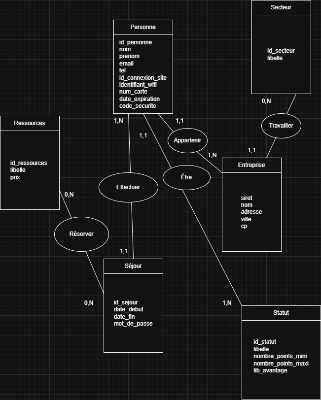
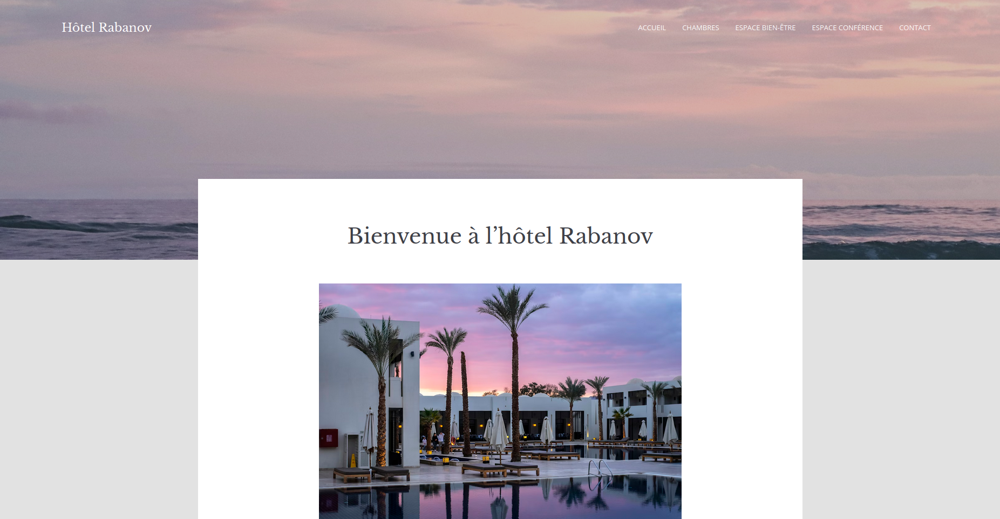
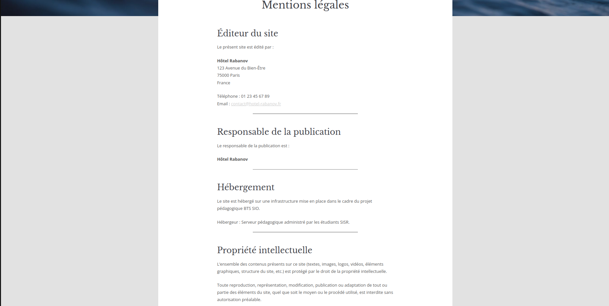
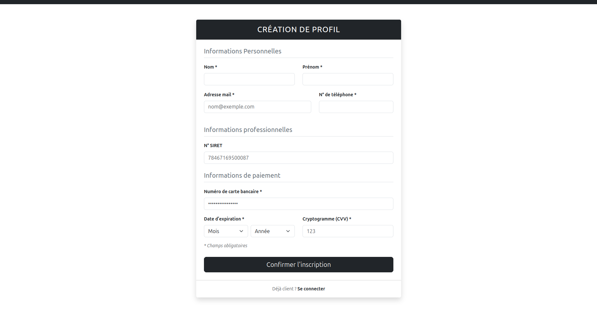
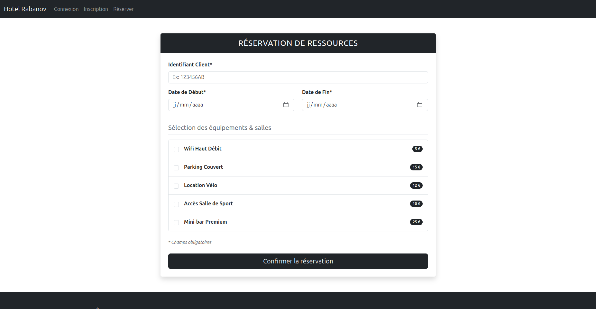

Contexte du Projet
Dans le cadre de notre formation, nous avons été mis en situation de projet pour tester nos compétences et capacités acquises pendant l'année. Pour ce faire, les enseignants nous ont répartis en groupes de 4, composés de 2 développeurs (SLAM) et 2 techniciens de réseau (SISR).
L'objectif était de simuler l'écosystème numérique complet d'un hôtel : la mise en place d'une infrastructure réseau robuste d'un côté, et de l'autre, la création des sites web et applications nécessaires à son bon fonctionnement. Ma spécialité étant axée sur le développement, cet article détaillera principalement la partie logicielle et applicative.
Modélisation et Structure de la Base de Données
Première étape cruciale : la conception de la base de données indispensable au bon fonctionnement de toutes nos futures applications. En binôme avec mon camarade de l'option SLAM, nous avons commencé par concevoir le MCD (Modèle Conceptuel de Données).
À l'issue de cette modélisation, nous avons produit le MLD (Modèle Logique de Données) puis rédigé le script SQL de création. Cette base de données centralisée a immédiatement été mise à disposition pour le déploiement sur l'infrastructure réseau.

Figure 1 : Modèle Conceptuel de Données (MCD) de l'application hôtelière.
Site Vitrine sous WordPress
La deuxième tâche consistait à concevoir un site internet vitrine pour l'hôtel fictif. Son but principal était d'accroître la visibilité en ligne de l'établissement et de mettre en valeur ses services.
Une attention particulière a été portée à la mise en conformité vis-à-vis des législations françaises et européennes (RGPD), via l'intégration d'un module de consentement pour les cookies et la rédaction des pages de mentions légales. Bien que mon équipier ait pris le lead sur cette partie, j'ai pu suivre de près son intégration.

Vue d'ensemble du site vitrine WordPress.

Gestion de la conformité RGPD et mentions légales.
Application Lourde C# (.NET) : Gestion des Clients et Fidélité
J'ai été le développeur principal sur cette troisième tâche : la création d'une application de bureau dédiée à la gestion interne de la clientèle, des séjours et des programmes de fidélité. Pour ce faire, nous avons utilisé la Programmation Orientée Objet (POO) sous l'environnement C#.
L'utilisation des classes objets métiers (Client, Sejour, Fidelite) a rendu la structure logique très simple à manipuler. Pour le système de fidélité, j'ai notamment mis en œuvre le concept d'héritage en créant des sous-classes spécifiques pour les différents statuts de l'hôtel : Bronze, Argent et Or.
Défi Technique : Problème d'accès à MariaDB
L'établissement d'une liaison fonctionnelle via le réseau entre notre application C# et la base de données s'est révélé complexe.
Diagnostic & Résolution : Bien que le serveur configuré par nos camarades SISR fonctionnait parfaitement en local, la configuration initiale des ports d'accès distants sur MariaDB interdisait les connexions extérieures. Après identification et ajustement des règles d'accès au niveau des ports et des privilèges de l'utilisateur MariaDB, l'application est devenue pleinement opérationnelle.
Plateforme Web de Réservation en PHP
La dernière tâche concernait le développement de l'espace client web permettant la création de compte et la réservation de séjours en ligne. Entre l'ASP.NET et le PHP, notre choix s'est porté sur le PHP, car sa mise en œuvre était plus accessible et facilitait également la tâche de nos collègues SISR qui n'avaient pas à déployer un serveur IIS complexe sous Windows Server.
Cette partie a été de loin la plus longue et complexe du projet. Bien que les objectifs fonctionnels fussent simples, j'ai fait face à de multiples bugs sur les contrôles de saisies utilisateurs (générant des plantages critiques).
Ajustement de la Base de Données
Lors du codage des formulaires de réservation, des conflits de types de données sont apparus entre les variables PHP et les colonnes de la base de données. Il a donc fallu ré-intervenir sur notre script SQL d'origine pour modifier la structure des tables et l'adapter aux besoins réels du site web.
Malgré ces imprévus, toutes les fonctionnalités ont été finalisées dans les délais impartis, respectant l'ensemble du cahier des charges fourni par nos professeurs.


Vues de l'interface de création de compte et du module de réservation PHP.
Déploiement et Bilan du Projet
À l'exception de l'application lourde C# (exécutée côté client), toutes nos productions applicatives (la base de données MariaDB, le site WordPress et la plateforme de réservation PHP) ont été déployées avec succès sur l'infrastructure de serveurs Linux / Windows préparée par l'équipe SISR.
Ce projet particulièrement complet s'inscrit directement dans la compétence "Travailler en mode projet" (Bloc 1). Il m'a permis d'améliorer significativement mes compétences en résolution de bugs techniques et m'a entraîné à la "Mise à disposition de services à des utilisateurs" à travers l'application web PHP. Le site vitrine ainsi que le site PHP peuvent également rentrer dans la compétence de bloc 1 "Développer la présence en ligne de l’organisation". Ce fut une expérience transversale passionnante pour apprendre à faire collaborer nos deux spécialités informatiques.
Infos Clés
- Contexte : Projet Transversal Équipe (2 SLAM / 2 SISR)
- Modélisation : MCD, MLD (SQL)
- CMS : WordPress (RGPD compliant)
- Gestion Client : C# (.NET Core, POO, Héritage)
- Web Dynamique : PHP 8 / MariaDB
- Compétences : Travailler en mode projet (Bloc 1) Mise à disposition de services (Bloc 1) Développer la présence en ligne de l’organisation (Bloc 1)